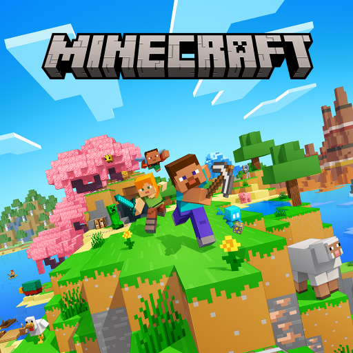
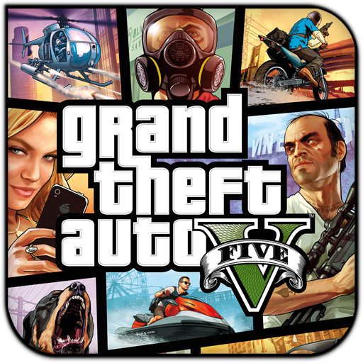
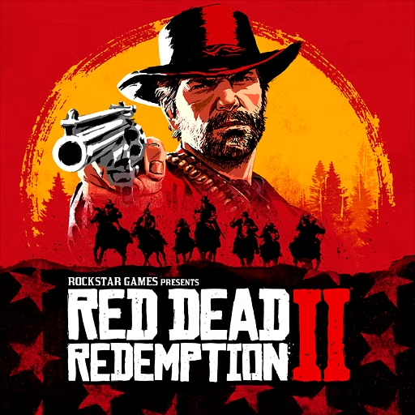
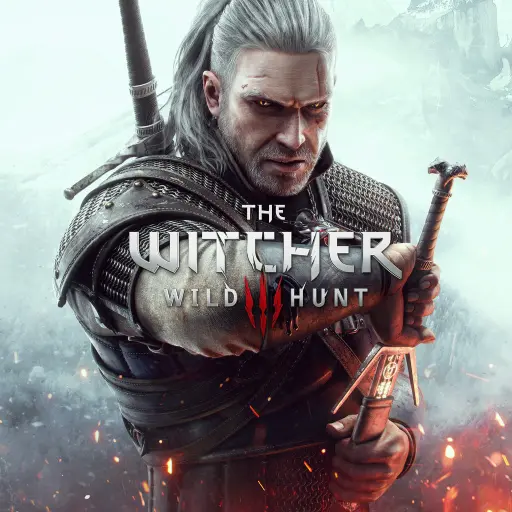
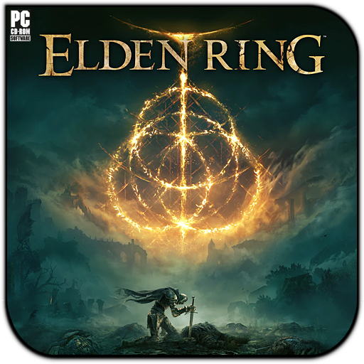
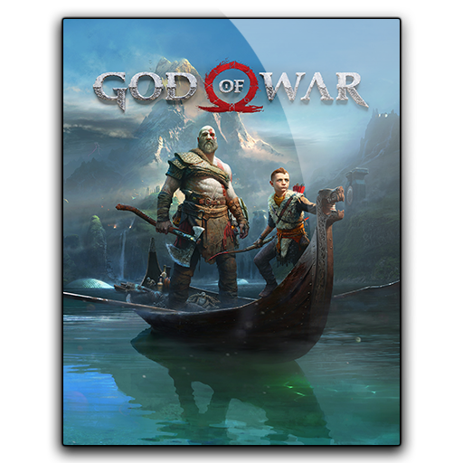
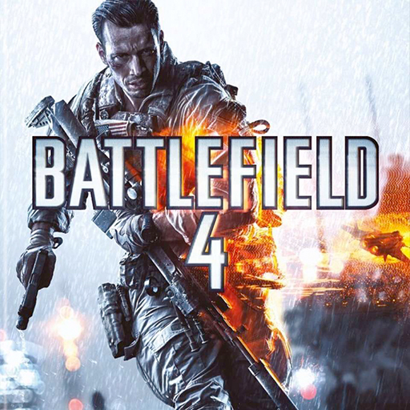
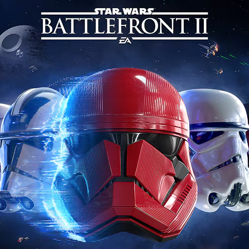
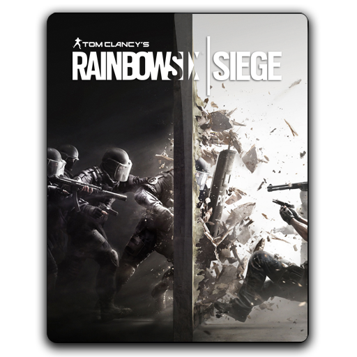

Lançado originalmente em 2009, Minecraft se tornou um dos jogos mais vendidos e influentes da história. Com seu estilo visual pixelado e mecânica de blocos, oferece liberdade total para construir, explorar, minerar e sobreviver em mundos infinitamente gerados.

Desenvolvido pela Rockstar Games, GTA V é um marco dos jogos de mundo aberto. Ambientado em Los Santos, permite alternar entre três protagonistas. Destaque para GTA Online, um dos modos multiplayer mais populares e expansivos do mercado.

Um épico do Velho Oeste da Rockstar. Red Dead Redemption 2 combina narrativa imersiva com mundo aberto vasto e realista. A história de Arthur Morgan conquistou crítica e jogadores pelo emocional e pelo nível técnico impressionante.

RPG aclamado da CD Projekt Red. The Witcher 3 coloca o jogador no papel de Geralt de Rívia em um mundo aberto cheio de missões densas, escolhas morais e batalhas contra monstros. Destaque para as expansões Hearts of Stone e Blood and Wine.

Criado pela FromSoftware com lore de George R. R. Martin, Elden Ring é um RPG de ação em mundo aberto, desafiador e rico em ambientação. Combina liberdade de exploração com um sistema de combate refinado.

God of War reinventa Kratos em um cenário nórdico, agora acompanhado de seu filho Atreus. Traz narrativa emocional, combates brutais e direção cinematográfica. Vencedor de diversos prêmios, incluindo Jogo do Ano.
Fortnite é muito mais que um battle royale. Com estilo cartunesco, mecânicas de construção e eventos interativos em tempo real, o jogo se tornou um fenômeno cultural entre jogadores, criadores de conteúdo e marcas.

FPS militar focado em guerra moderna com mapas gigantes, destruição em tempo real e uso de veículos. Battlefield 4 é referência em multiplayer tático e ação em larga escala, com forte suporte da comunidade até hoje.

Mergulhe no universo de Star Wars com gráficos cinematográficos e batalhas épicas. Battlefront 2 oferece modos multiplayer e uma campanha que amplia o lore da saga. Hoje, é altamente valorizado após várias melhorias pós-lançamento.

FPS tático da Ubisoft baseado em trabalho em equipe, operadores com habilidades únicas e ambientes destrutíveis. Siege é altamente competitivo e recebe atualizações constantes, sendo pilar no cenário de eSports tático.